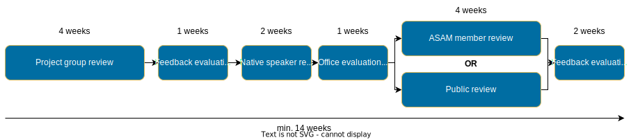

Project phases

Introduction
Besides different types of projects, there are five main project phases that ASAM defines. Not all projects must necessarily pass through all these phases. See the phase descriptions below for more details.

Descriptions
Purpose |
To decide whether an idea for a project is promising. |
|---|---|
Required for |
Any project not directly based on a previous project. |
Timeline |
No standard timeline |
If someone has an idea for a new standard, it triggers the ideation phase for a new project.
During this phase, the idea is evaluated and fleshed out a bit until it is either discarded (e.g. it is not feasible or a duplicate of sorts) or accepted by ASAM.
In case the idea is accepted, the project moves on to the Proposal Phase.
The Ideation Phase is a phase of variable length.
It may contain an Ideation Workshop where the idea is first developed together with ASAM and interested members before it is deemed promising enough to enter the next phase.
Purpose |
To define participants and funding for a project and decide whether to proceed. |
|---|---|
Required for |
Every project type. |
Timeline |
The typical Proposal Phase timeline consists of 
|
Whether a project idea was just accepted or a new project is proposed based on a released concept paper or as an improvement of an existing standard, it enters the Proposal Phase.
During this phase, the proposed project is announced and then presented to interested parties, who can sign up to join the project team if it is approved by the TSC.
A Proposal document is written, detailing the project’s targets, participants, the budget, timeline, and other project-related information, such as the type of the project.
The Proposal document is then released to attract more attention as well as for transparency.
It is also the basis for the ASAM TSC, which decides if the project may continue or not.
If the go-ahead is given, the project continues on to the Development phase.
|
The group may decide to do more than one Proposal Workshop. In this case, enrollment starts after the last workshop and proposal submission is due 4-8 weeks after that date. |
Purpose |
To develop the project’s deliverables. |
|---|---|
Required for |
Every project type. |
Timeline |
The length of the Development Phase varies from project to project. |
This is the main phase of each project.
If you want to learn more about how to get ready for your project, check out the Guided tour.
During this phase, the project-type specific deliverables are developed by the project participants.
In the beginning, the project team organizes a workshop to specify their modus operandi and set up all technical aspects of the project.
In particular, the Project Lead who is the main responsible for the project is elected.
Depending on the size of the project, other roles such as Subgroup Leads are also elected.
Additionally, the group may also employ one or more Service Providers as outside help if the required budget was included in the Proposal document.
This is followed by specifying, writing, and reviewing content internally until the document or documents are ready for a ASAM-internal or public review in the Review Phase.
The requirements for "ready" can be found under the 'Review' tab.
| The project group can (and should!) review their changes regularly during development. The Review phase is a dedicated "final" review phase before publication. |
During development, the project team has regular group meetings.
ASAM recommends a 2 month interval for these larger meetings.
In between, the group (and its optional subgroups) works on the parts of the project they prioritized for this interval.
During development, the project group will meet in multiple different types of meetings not depicted here. For example, a project with subgroups will have individual subgroup meetings for each of them within each development interval. For more on the types of meetings during a project’s development, see Project meetings in the Guided tour.
Purpose |
To review the developed deliverables. |
|---|---|
Required for |
|
Timeline |
The typical Review Phase timeline looks like this:

Figure 2. The Review phase timeline
|
Before a developed standard is officially released, the created deliverables have to be reviewed.
Depending on the project, these reviews may be available to ASAM members only, open to the general public, or a mixture of both.
Any problems that are identified during any of these reviews are then analyzed and categorized.
Important fixes have to be made before the deliverables are released, whilst improvements beyond the initial scope or minute details may be put off for future iterations.
Once the document has been successfully reviewed and no critical issues are open anymore, the project continues on to the Release Phase.
In order to be allowed to enter the Review phase, the group must ensure the following requirements are met:
-
All deliverables of the standard shall be feature-complete, i.e. the specification or revision of all features of the standard has been finished.
-
A partial review of a deliverable (where the deliverable is incomplete) is prohibited!
-
The project group members determine whether the standard is ready for the review phase.
| The project group can (and should!) review their changes regularly during development. The Review phase is a dedicated "final" review phase before publication. |
The Review phase contains of at least two review periods: one group review period and one review period with reviewers outside the group.
The group review may be skipped entirely if the group can provide good reasons for doing so.
In this case, it must get approval from the ASAM Office Responsible, the Project Lead, and the ASAM CTO first.
There are two types of reviews outside the group:
-
ASAM member reviews (default)
-
Public reviews
The Office may restrict the group of reviewers in agreement with the project group members or as per TSC decision.
After each review period, all feedback must be reviewed and the group must make a decision on how to proceed with it.
The decision includes as a minimum the status "accepted", "rejected" or "deferred".
The decision must be documented.
The group may start reviewing the feedback before the end of the respective review period.
However, it may not extend into the next period.
Accepted feedback shall be implemented. The project group has full authority how to implement the reviewers' feedback into the standard. They can implement changes as proposed by the reviewer, or decide for a different implementation.
Reviewers should not submit new use-cases, features, or requirements as part of their review feedback.
If a reviewer’s feedback is actually out-of-scope, since it contains a request to consider a new use-case, feature or requirement, then the feedback shall be rejected and transferred to the ASAM CR-system with status "new".
Both the group review and the review outside the group may be repeated if major changes had to be implemented based on the provided feedback.
Purpose |
To release the developed deliverables. |
|---|---|
Required for |
Every project type. |
Timeline |
The typical Release Phase timeline looks like this: Figure 3. The Release phase timeline
|
After the deliverables have been developed (and, in case of a major or minor standard development project, successfully reviewed), the project enters the Release Phase. The project group prepares a release candidate and agrees per formal voting to submit the candidate to the TSC for release decision. The release candidate has to be accepted by absolute two-thirds majority for it to pass.
The Project Leader submits the following deliverables to ASAM:
-
the standard with all supplemental documents, files and examples that constitute the deliverables to members
-
sources required to generate the deliverables, including written instructions how to generate them
-
revision history documentation (not needed for version 1.0.0)
-
a (new) release presentation
(Sources are those digital work products, which can be modified or edited with standard tools such as text editors, image processors or modeling tools, and which are the input for generators that produce the final deliverables.)
| The release candidate has to be submitted at least two (2) weeks prior to the next TSC meeting. |
For a development project, this also requires that the Review Phase has been passed without any critical issues still open.
The project has now concluded.